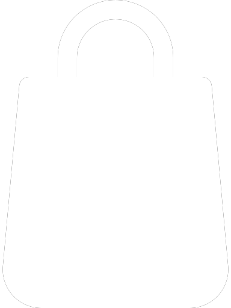
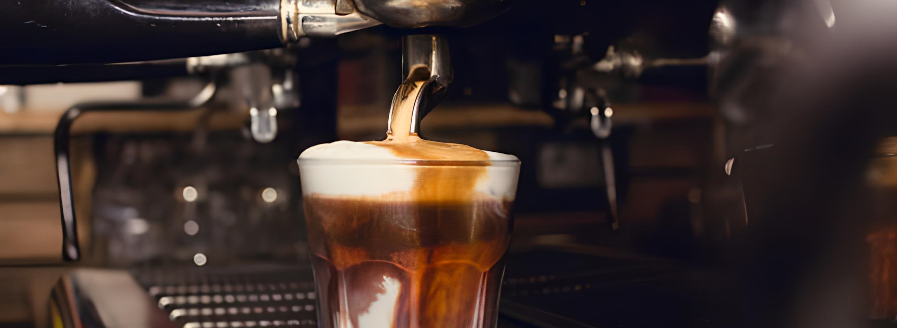

0


Occupational risk assessment
Hot coffee, constant precaution


Web Applications Developer
1
| Identified risks | Probability | Gravity | Assessment | Action required | ||||
| L | M | H | SH | H | EH | |||
| Forced postures and repetitive movements | X | X | Important | Ergonomic chairs and adjustable and adequate desks should be provided to avoid awkward postures when sitting for long periods of time. In addition, peripheral devices, such as keyboard or mouse, must also be ergonomic and suitable for prolonged use. In this way, we will avoid causing injuries due to repetitive efforts and back, neck pain, etc. | ||||
| Eye strain and eye problems | X | X | Important | The employee should take regular breaks to relieve eye strain and reduce eye strain. The monitor provided by the company must have an optimal setting so that the employee can adapt the brightness, the contrast and color temperature to their needs at all times. In addition, the monitor must be placed at a safe distance and comfortable for the employee's view, it has to have a screen filter that reduces eye strain. | ||||
| Falls to the same level | X | X | Tolerable | Cables in the working environment must be organized and secured to prevent accidents and falls. In general, workspaces should be kept clean and organized. | ||||
| Fire due to overheating of equipment and accidents with electrical cables | X | X | Moderate | Fire safety regulations must be followed and extinguishers must be available, in addition to being careful regarding the overloading of plugs (to avoid short circuits and electrical accidents) and the use of damaged cables. It is important to keep equipment well ventilated and not block air vents. | ||||
| Stress and workload | X | X | Moderate | Reasonable time limits should be set and work-life balance encouraged. It's also recommended that work vary to avoid monotony and boredom (as well as provide employees with learning opportunities). | ||||
| Electromagnetic radiation | X | X | Important | Devices should be handled from an appropriate distance from the body and devices with low radiation certification should be used. As far as possible, the use of electronic devices during rest time should be avoided and screen protectors and covers that are specifically designed to reduce exposure to this radiation should be used. | ||||

Server
2
| Identified risks | Probability | Gravity | Assessment | Action required | ||||
| L | M | H | SH | H | EH | |||
| Falls to the same level | X | X | Important | Work areas should be kept clean and tidy to reduce the risk of slips and falls, so special attention should be paid to any spillages or objects on the floor, in addition to using non-slip mats in areas prone to getting wet. The use of non-slip shoes is recommended. | ||||
| Burns, cuts and wounds | X | X | Moderate | Gloves and thermal mitts should be worn when handling hot containers, be careful when pouring hot liquids and know their temperature, use appropriate cooking utensils to prevent possible burns and take special care when opening ovens or microwaves. | ||||
| Overexertion | X | X | Moderate | Appropriate hoisting techniques (to avoid back problems), try to ask for help in lifting or transporting heavy objects, organise and distribute the weight correctly when loading, use appropriate tools and equipment provided by the company (tray with wheels, etc. ), maintain an ergonomic posture, take regular breaks (to prevent muscle fatigue and the risk of injury) and perform strengthening and stretching exercises that focus on muscles used during the working day. | ||||
| Stress and workload | X | X | Trivial | Regular breaks should be taken to deal with difficult clients and maintain a steady pace at work. It's also advisable to plan tasks efficiently to meet all deadlines and learn stress management techniques. | ||||
| Exposure to noise | X | X | Moderate | The employee must wear hearing protectors to protect himself from exposure to noise and hearing in the event of an environment that is too noisy. | ||||
| Forced postures and repetitive movements | X | X | Moderate | Correct postures should be used to perform the tasks, trying to avoid any forced and repetitive movements. It's also recommended, as well as to avoid overexertion, to perform specific exercises and stretches for the muscles and joints that are most damaged at work. | ||||

Cook
3
| Identified risks | Probability | Gravity | Assessment | Action required | ||||
| L | M | H | SH | H | EH | |||
| Thermal contact and high temperatures | X | X | Important | The employee should drink enough water to maintain good hydration during the working day, wear suitable and breathable clothing to maintain comfort and take regular breaks in cool and ventilated areas (to maintain the health of the worker and prevent heatstrokes or exhaustion). | ||||
| Burns, cuts and wounds | X | X | Important | Suitable gloves and utensils should be used to handle food and hot containers (for example, knives should be well maintained and sharp to reduce the pressure exerted during cutting), as well as a designated area for placing hot containers away from work areas and another clean and organised area to prevent accidents with sharp objects. It's also recommended to use frying equipment with thermostat and temperature control to prevent the oil from overheating, use splash protectors, etc. | ||||
| Chemical exposure | X | X | Important | The kitchen should be well ventilated to minimize exposure to chemical vapours (using extraction hoods and fans, also avoiding breathing directly over hot pots), personal protective equipment should be used if necessary. | ||||
| Falls to the same level | X | X | Tolerable | The floor should be kept clean and dry at all times, it's recommended to use non-slip mats in areas where water or grease may accumulate and generally keep the workspace organized to prevent falls. | ||||
| Forced postures and repetitive movements | X | X | Moderate | Appropriate hoisting techniques should be used when handling heavy objects and performing stretching and strengthening exercises to maintain optimal physical condition. | ||||
| Exposure to noise | X | X | Moderate | Regular maintenance of the equipment should be done, to ensure smooth operation and reduce unnecessary noise. You can also use quieter kitchen equipment, isolate noisy areas with sound absorption panels or install ventilation systems that generate less noise. | ||||